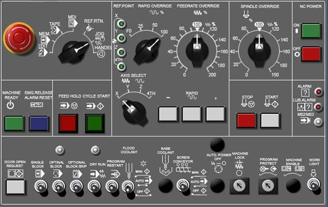
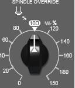
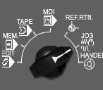

| 韩国Doosan FANUC 0i-MC面板 |
| 返回<<< |

NC program start NC
program stop
Emergency stop Program start Program pause

Feed rate of cutting
Mode select：edit/AUTO/MDI/DNC/handwheel/JOG/return to reference point